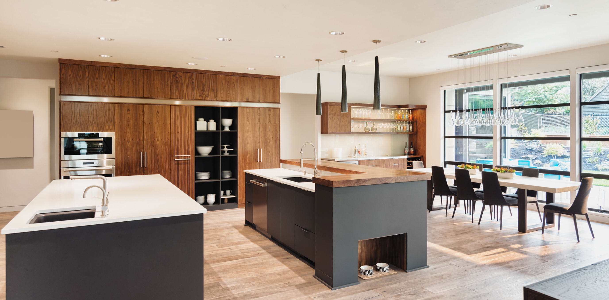
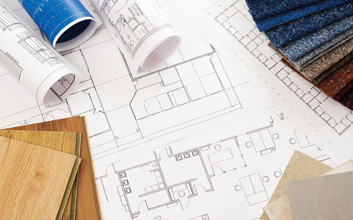
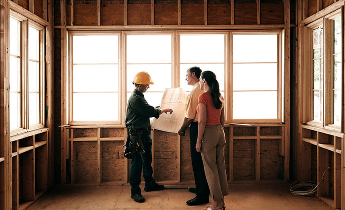
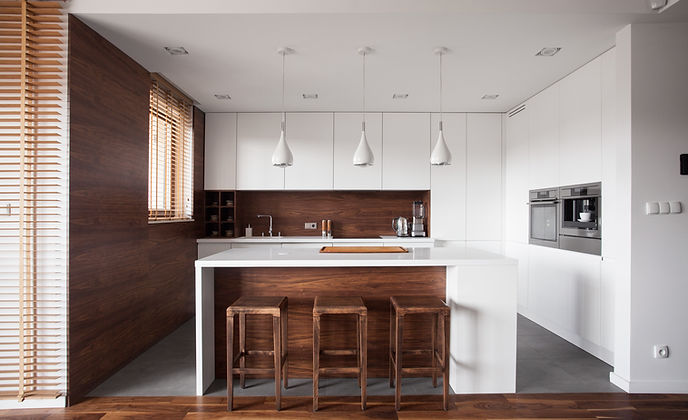

About Oakwaters Construction
Operating across an extensive region, from the scenic Muskoka to the stunning Niagara, and from the vibrant city of Guelph to the bustling metropolis of Toronto, Oakwaters Construction Limited has earned a stellar reputation for our commitment to top-tier craftsmanship and exceptional customer service. As a true industry leader, we oversee and coordinate all trades, ensuring seamless collaboration and project management.
The results of our projects speak for themselves, reflecting the highest standards of quality and unparalleled attention to detail. We take pride in turning visions into reality, always striving to exceed expectations and deliver outcomes that leave a lasting impression.
Each endeavour showcases the highest quality and finishes, underlined by an unwavering attention to detail. Renowned for our exceptional craftsmanship and customer-centric approach, we have earned the trust of clients seeking a construction partner that delivers beyond expectations.

Our Process
Experience the ultimate transformation for your home with our residential remodeling and renovation company. Our meticulous process starts with attentive listening and extensive consultations with you, ensuring that your vision and desires are at the heart of every decision, resulting in stunning spaces that reflect your unique style and exceed your highest expectations.

Preconstruction Design
Design & Construction Estimate
On-Site Consultations

The Finishing
Touches

Our Quality Guarantee
Our meticulous process, combined with our unwavering commitment to a guarantee of quality and workmanship, ensures that every project is executed to perfection, leaving you with breathtaking spaces that stand the test of time.